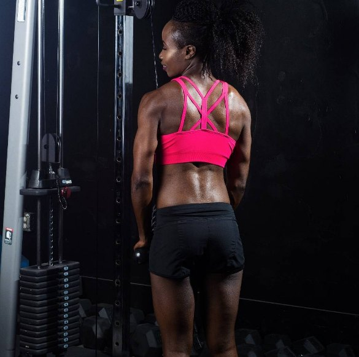

The Food Clarity Method
A practical 16-week weight-loss and nutrition coaching journey. Five phases, one clear lane, and a set of skills you keep.
Five phases, sixteen weeks.
Each phase does one job and builds on the one before it. The coaching still bends around whatever your week actually looks like.
By the end you should not need me. That is the design.
-
Phase 01
Clarify
We start with the week you actually have, not an ideal one. What you have already tried, what happened each time, and where the confusion is coming from. Nothing here is a test and there is no wrong answer.
-
Phase 02
Understand
Labels, portions, protein, carbohydrates. You learn what each one does and roughly how much you personally need, so every food on your plate is there for a reason you can say out loud.
-
Phase 03
Apply
We build the structure around your kitchen, your budget and your schedule. Not a printed plan you abandon on the first difficult day, but a way of deciding that still works in a restaurant or at a family table.
-
Phase 04
Stay consistent
Weekly check-ins, honest feedback and adjustments as your body responds. One imperfect meal is still just one meal. This is the phase where most women stop starting over.
-
Phase 05
Own it
By the end you should not need me. That is the design. You can read a label, judge a portion and adjust when life changes, without waiting for anyone to give you permission.
What you get for sixteen weeks.
The five phases above are what happens. This is what you get.
- Private one-to-one coaching
- Sixteen weeks, working with me directly. Not a group, not an app, and not a course you watch on your own.
- A nutrition structure built around your life
- Your kitchen, your budget, your schedule and the food you already buy. Not a printed meal plan, and the reasoning is explained every time so you can rebuild it yourself later.
- Portion training
- How much, judged with your own hands and your own plates, so you can do it at a restaurant and at your mother's table without a scale or an app.
- Label reading
- Serving size, protein and added sugar, in that order, plus what the front of the packet is not telling you.
- Weekly check-ins
- Honest feedback and adjustments as your body responds. This is where most women stop starting over.
- Real-life problem solving
- Restaurants, travel, family meals, birthdays and the weeks that simply go wrong. Those weeks are the program, not an interruption to it.
- Skills you keep
- By week sixteen you should not need me. You can read a label, judge a portion and adjust when life changes. That is the design.
One program, and the call that starts it.
There is one program, and one conversation that starts it. Nothing is decided on that call except whether I can help.
Free consultation
Free, 20 minutes
- What you have already tried
- What is actually getting in the way
- An honest answer on whether I can help
- No obligation to continue
The Food Clarity Method
Investment shared on your call
- One-to-one coaching for sixteen weeks
- A nutrition structure built for your life
- Portion and label training, so you learn the why
- Weekly check-ins and accountability
- Adjustments as your body responds
- Habits designed to outlast the program
This is for you if.
- You have tried the diets, the teas, the supplements, the waist trainers, and none of it stuck.
- Your clothes stopped fitting the way they used to and you cannot work out what changed.
- You want to understand nutrition, not be handed a plan you cannot maintain.
- You are tired of advice that assumes you have unlimited time and a perfect week.
- You are willing to be consistent for sixteen weeks.

Questions I get every week.
No. You will learn what carbohydrates do, roughly how much you personally need, and how to fit them into your week. Cutting out whole food groups is exactly the kind of advice that leaves women confused and stuck.
Not in the way you are imagining. A printed plan works until the day you eat something that is not on it. I teach you the reasoning, which is portions, protein and labels, so you can make a good decision in a restaurant, at a family gathering, or on a bad week.
Bring it to the call. That is a conversation to have with me and with your doctor. My coaching is education and accountability around food, and I will always tell you when something belongs with your physician rather than with me.
No. This is nutrition coaching. Movement helps and we will talk about it, but you will not be asked to spend hours you do not have in a gym.
I share the investment on the consultation call, once I know which program actually fits you. The call itself is free and there is no obligation to continue.
You keep going, on your own. That is the whole design. My goal is never to make you dependent on me. It is to leave you able to manage your own nutrition for life.
Free guide
The label-reading guide for real life
Serving size, protein, added sugar. Three numbers, in that order, and you can judge almost any packet in the aisle. This is the short, plain-English guide I wish every woman had before she started another diet.
Email me and I will send it straight back.
Three numbers, in that order.
Sixteen weeks from now, you could be done guessing.
Book your free consultation and we will find out together whether this is the right fit.